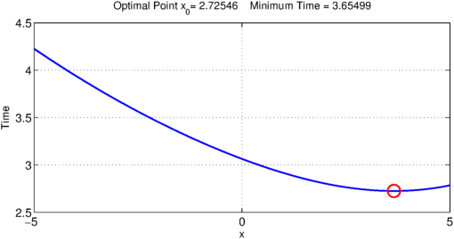
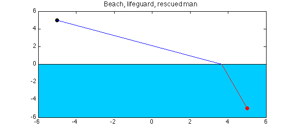
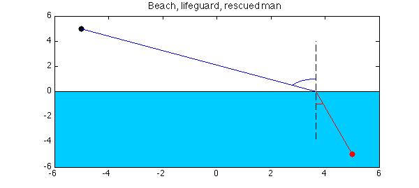

FS = 'fontsize'; MS = 'markersize'; LW = 'linewidth'; lw = 1.6;
How to save a drowning man
On a bright sunny day we are having a nice time at the beach:
figure(1)
area( [-6, 6], [-6, -6] ); colormap([0 .8 1])
axis([-6,6,-6,6]), hold on
title('Beach',FS,14)

A lifeguard is located at the point $(-5, 5)$. (We use complex arithmetic for simplicity.)
sMan = -5+1i*5;
plot(sMan, '.k', MS, 24)
title('Beach, lifeguard',FS,14)
The lifeguard spots a man desperately struggling and about to drown. The location of the drowning man is $(5,-5)$:
dMan = 5-1i*5;
plot(dMan, '.r', MS, 24)
title('Beach, lifeguard, drowning man',FS,14)

Before the lifeguard makes a dash to save the drowning man, we note that the speed at which he can run on the sand is much greater than the speed at which he can swim in the water:
vLand = 10; vWater = 3;
This means that rather than running straight toward the drowning man, he should run a little longer along the beach to make use of his faster speed. Exactly what path should he take can be computed by minimizing the total time, determined by a formula involving the two different speeds. This can be easily done in Chebfun. Let $x_0$ be the unknown point on the shore that he should run towards in order to reach the drowning man in a minimum time. In order to find $x_0$, we first define a chebfun $x$:
x = chebfun('x', [real(sMan), real(dMan)] );
The total time required to reach the drowning man as a function of a point $x$ on the shore is given by:
T = abs(x-sMan)/vLand + abs(x-dMan)/vWater;
We now find the minimum time $T_{min}$ and the location of the minimum $x_0$, i.e., the point on the shore that the lifeguard should aim for.
[Tmin, x0] = min(T)
figure(2), plot(x,T, LW, lw), hold on
plot( x0, Tmin, 'or', MS, 14 ), hold off
s = sprintf( 'Optimal Point x_0= %.5f Minimum Time = %.5f', Tmin, x0 );
title( s, FS, 12), grid on
xlabel('x',FS,12), ylabel('Time',FS,12)
Tmin = 2.725459432914104 x0 = 3.654986635087125

Let us now draw the optimal path that should be followed in order to reach the drowning man as quickly as possible.
figure(1)
plot([real(sMan), x0], [imag(sMan), 0], LW, lw )
plot([x0, real(dMan)], [0, imag(dMan)], 'r', LW, lw )
title('Beach, lifeguard, rescued man',FS,14)

Verifying Snell's Law
This problem is an illustration of the famous Snell's law. Whenever an object is subject to motion with different speeds in two different media, the angle at which the object should hit the interface of the two media for an optimal path, i.e. the one requiring the least amount of time, is determined by Snell's Law: $$ \frac{\sin(\theta_1)}{\nu_1} = \frac{\sin(\theta_2)}{\nu_2}. $$ We can verify this in Chebfun very easily.
plot([x0, x0], [-4, 4], '--k', LW, lw) sinTh1 = abs(real(sMan)-x0)/abs(sMan-x0); sinTh2 = abs(real(dMan)-x0)/abs(dMan-x0); th1 = asin(sinTh1); th2 = asin(sinTh2); plot(x0+exp(1i*(pi/2+linspace(0,th1,100)))) plot(x0+exp(1i*(3*pi/2+linspace(0,th2,100))), 'r'), hold off

sinTh1/vLand - sinTh2/vWater
ans =
-2.109423746787797e-15